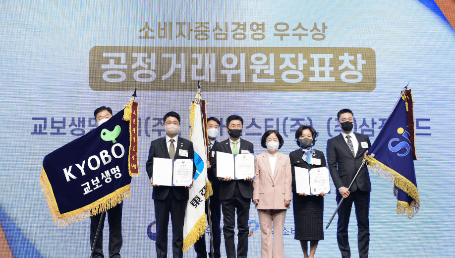
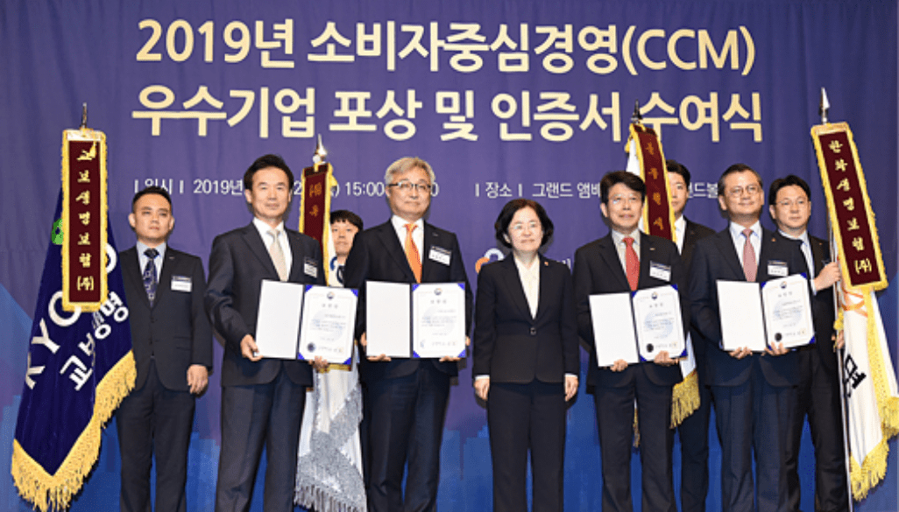
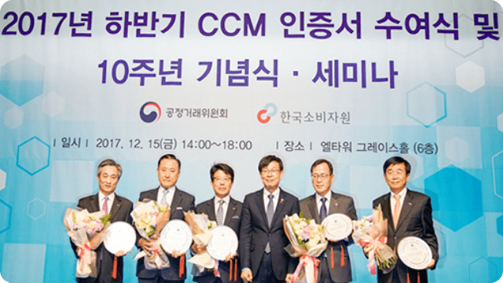

교보생명은 지속적인
고객중심경영과 고객권익증진에
기여하는 기업입니다.
고객중심경영과 고객권익증진에
기여하는 기업입니다.
공정거래위원회 위원장 표창
-
2021년 12월
소비자보호 권익 신장에 앞장선 모범적인 회사로 국가 사회 발전에 이바지한 공로를 인정 받아 소비자의 날을 맞아 공정거래위원장 표창을 받았습니다.
 -
2019년 12월
CCM 최초 인증부터 지속적인 CCM 재인증을 거치며 소비자중심경영 우수기업으로 인증받고, 더불어 소비자 권익증진을 통해 국가 사회 발전에 크게 이바지한 공로를 인정받아 공정거래위원장 표창을 받았습니다.
 -
2017년 12월
정부 기념일인 제22회 「소비자의 날」에 소비자 권익증진을 위해 노력한 기관에게 수여하는 공정거래위원장 표창을 받음으로써 금융소비자보호와 권익 신장에 앞장선 모범적인 금융회사로 인정받았습니다.
CCM 인증 기업 공로패 수상
-

지속적인 고객중심경영과 고객권익증진에 기여한 공로를 인정받아 공정거래위원회와 한국소비자원 주최로 열린 ‘2017 하반기 소비자중심경영 인증서 수여식 및 10주년 기념식, 세미나'에서 10년 연속 CCM 인증 기업 공로패를 수상했습니다.